|
Inchang Baek I'm an integrated M.S.-Ph.D. candidate at the AI Graduate School of Gwangju Institute of Science and Technology (GIST), advised by Prof. Kyung-Joong Kim. My research focuses on artificial intelligence for games, particularly reinforcement learning, procedural content generation (PCG), and large language models (LLMs). I'm passionate about leveraging AI to enhance human creativity and optimize development workflows in the gaming industry. Previously, I was a research intern at KRAFTON AI. I expect to graduate in February 2027. Email / CV / Google Scholar / LinkedIn / Github |
{kind=link}
News
|
Publications |
|
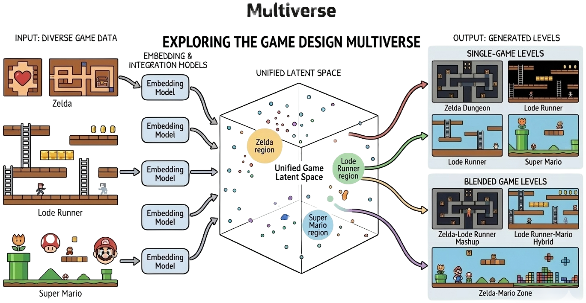 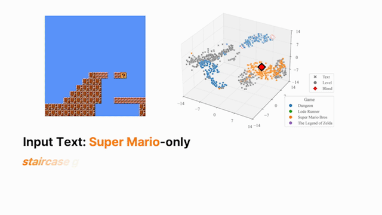 |
Multiverse: Language-Conditioned Multi-Game Level Blending via Shared Representation
I.-C. Baek*, J. Jung*, S.-H. Kim, G.-H. Hwang, K.-J. Kim Under review at IEEE Conference on Games (CoG), 2026 (* Equal contribution) arXiv / code Multimodal |
|
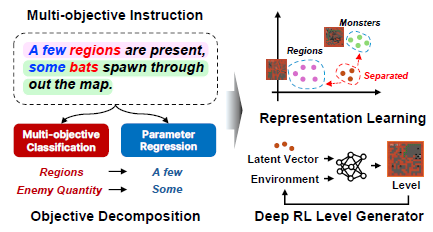 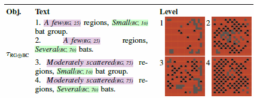 |
Multi-Objective Instruction-Aware Representation Learning in Procedural Content Generation Reinforcement Learning
S.-H. Kim, G.-H. Hwang, I.-C. Baek, S.-Y. Lee, K.-J. Kim Under review at IEEE Conference on Games (CoG), 2026 arXiv RLMultimodal |
|
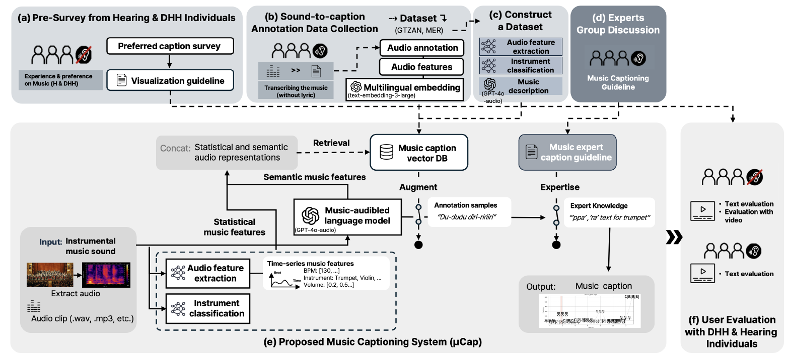 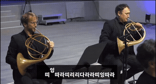 |
μCap: Instrumental Music Captions for Deaf and Hard-of-Hearing Individuals
S. Ahn, I.-C. Baek, K.-J. Kim, K. N. Truong, J.-H. Hong ACM CHI Conference on Human Factors in Computing Systems (CHI), 2026 🏆 Best Paper Award (Top 1%) code LLM |
|
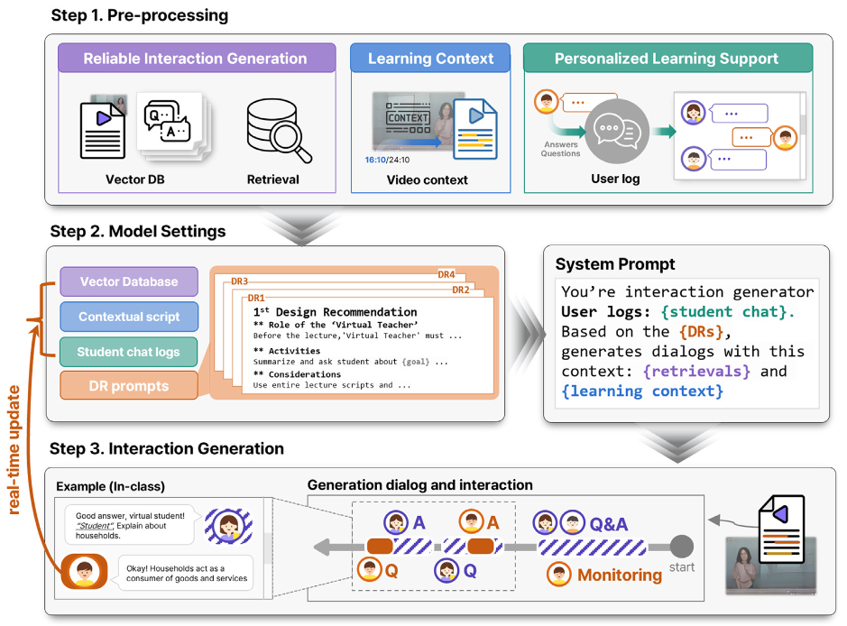 |
GPTalk: LLM-Based Virtual Companions for Metacognitive Growth in Self-Directed E-Learning Environments
I.-T. Jung, C.-H. Lee, I.-C. Baek, D.-I. Oh, Y.-J. Choi, K.-J. Kim, D.-J. Kong, J.-H. Hong International Journal of Human-Computer Studies (IJHCS), 2026 paper LLM |
|
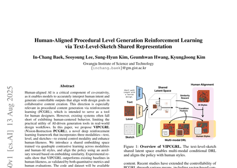 |
Human-Aligned Procedural Level Generation Reinforcement Learning via Text-Level-Sketch Shared Representation
I.-C. Baek*, S. Lee*, S.-H. Kim, G. Hwang, K.-J. Kim Under revision at IEEE Transactions on Games, 2025 (* Equal contribution) arXiv RLMultimodal |
|
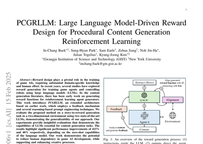 |
PCGRLLM: Large Language Model-Driven Reward Design for Procedural Content Generation Reinforcement Learning
I.-C. Baek, S.-H. Kim, S. Earle, Z. Jiang, J.-H. Noh, J. Togelius, K.-J. Kim Under revision at IEEE Transactions on Games, 2025 arXiv RLLLM |
|
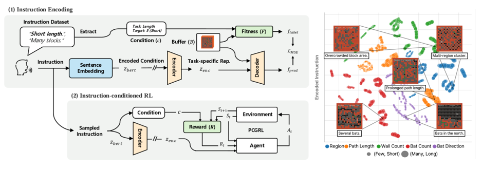 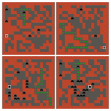 |
IPCGRL: Language-Instructed Reinforcement Learning for Procedural Level Generation
I.-C. Baek*, S.-H. Kim*, S.-Y. Lee, D.-H. Lee, K.-J. Kim IEEE Conference on Games (CoG), 2025 (* Equal contribution) arXiv / paper RLMultimodal |
|
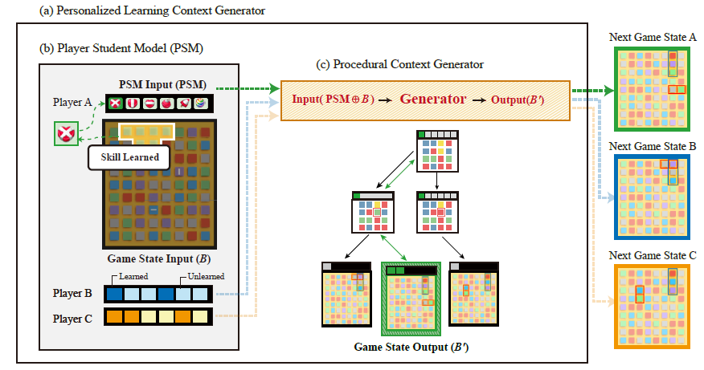 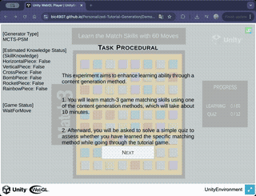 |
Seamless Tutorial: Contextual State Transition Generation Based on Player Internal Knowledge
I.-C. Baek, T.-H. Park, K.-J. Kim IEEE Transactions on Games, 2025 paper / code / demo MCTS |
|
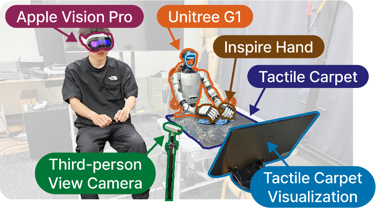 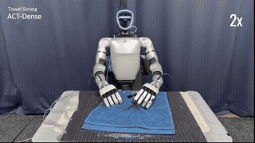 |
A Humanoid Visual-Tactile-Action Dataset for Contact-Rich Manipulation
E.-J. Kwon, S.-W. Oh, I.-C. Baek, Y.-C. Park, G.-B. Kim, J.-Y. Moon, Y.-H. Choi, K.-J. Kim IROS 2025 Workshop on Robotic Fine Manipulation, 2025 arXiv IL |
|
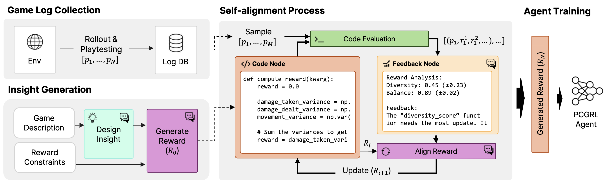 |
ChatPCG: Large Language Model-Driven Reward Design for Procedural Content Generation
I.-C. Baek, T.-H. Park, J.-H. Noh, C.-M. Bae, K.-J. Kim IEEE Conference on Games (CoG), 2024 arXiv / paper RLLLM |
|
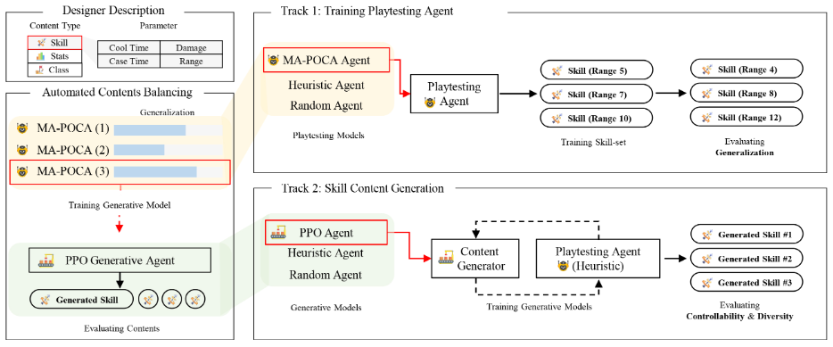 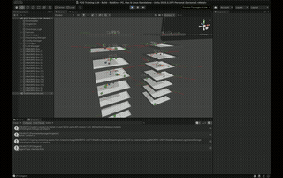 |
RaidEnv: Exploring New Challenges in Automated Content Balancing for Boss Raid Games
H.-C. Jeon*, I.-C. Baek*, C.-M. Bae, T. Park, W. You, T. Ha, H. Jung, J. Noh, S. Oh, K.-J. Kim IEEE Transactions on Games, 2023 (* Equal contribution) arXiv / paper / code RL |
|
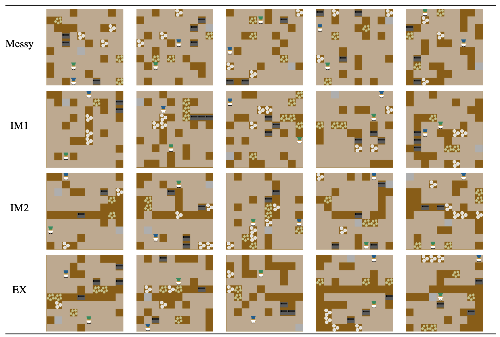 |
Toward Cooperative Level Generation in Multiplayer Games: A User Study in Overcooked!
I.-C. Baek, T.-G. Ha, T.-H. Park, K.-J. Kim IEEE Conference on Games (CoG), 2022 paper / code GA |
|
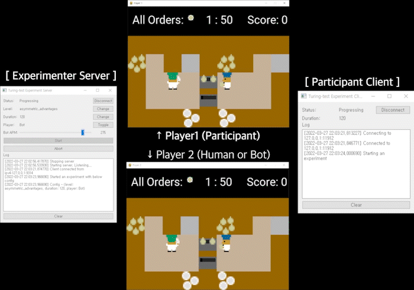 
|
Turing Test Framework for Cooperative Games
I.-C. Baek, T.-H. Park, T.-G. Ha, K.-J. Kim IEEE Conference on Games (CoG), 2022 paper RL |
|
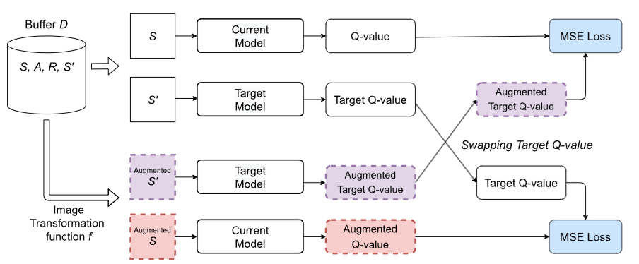 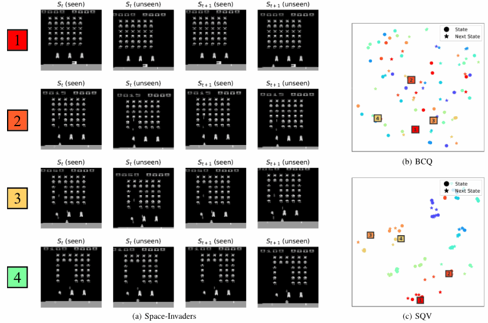 |
A Swapping Target Q-value Technique for Data Augmentation in Offline Reinforcement Learning
H.-T. Joo, I.-C. Baek, K.-J. Kim IEEE Access, vol. 10, 2022 paper RL |
|
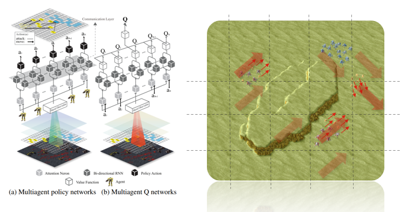 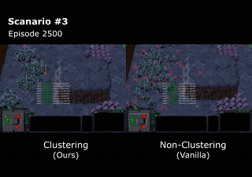 |
Efficient Multi-Agent Reinforcement Learning Using Clustering for Many Agents
I.-C. Baek, K.-J. Kim AIIDE-19 Workshop on Artificial Intelligence for Strategy Games, 2019 RLMulti-Agent |
|
Web-Based Interface for Data Labeling in StarCraft
I.-C. Baek, K.-J. Kim IEEE Conference on Computational Intelligence and Games (CIG), 2018 paper |
Work Experience |
|
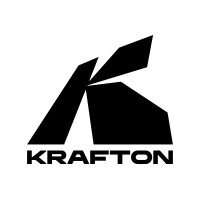 |
KRAFTON AI — Research Intern
Aug 2025 – Oct 2025, Seoul, South Korea Worked on LLM-based player agent policy generation for game environments. |
Selected Honors |
|
🏆 Best Paper Award (Top 1%), ACM CHI Conference on Human Factors in Computing Systems, 2026
🥈 2nd Place, The 2nd ChatGPT4PCG Competition, IEEE Conference on Games, 2024 🎓 GIST Graduate International Research Experience Fellowship (GIST-IREF), 2024 |
Selected Research Projects |
|
Development of AI Players for Puzzle Game Automated Testing
PuzzleOne Studio (BitMango) (Industry-academia Project) | May 2022 – Jan 2023 | Team Leader Gymnasium-based game simulator for commercial puzzle game; RL agents with categorical state representations |
|
Development of AI-based Game Simulation Technology to Support Online Game Content Production
Korea Creative Content Agency (KOCCA) | Apr 2022 – Dec 2024 Unity-based multiplayer game gymnasium environment; LLM-driven reward generation for RL agents |
|
Human-centered Game AI Basic Research Lab
National Research Foundation of Korea (NRF) | Jun 2021 – Feb 2024 Multiplayer game level generation using genetic algorithms; puzzle level generation & user study |
Skills |
|
Programming Languages: Python, C#, JavaScript
ML / RL Frameworks: PyTorch, JAX Game Engines & Simulation: Unity Infrastructure & Tools: Slurm, Docker |
|
Website template from Jon Barron. Feel free to use the source code. |